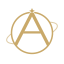
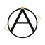
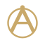
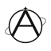

ATLAS · Identity v2 · 2026
标志的核心没有变：一个球体、一条轨道、一个极星。升级只做一件事——让字母 A 成为球体本身： 顶点是极点，两腿落在球面上，横杆就是赤道。这样它既是字标，也是地图。

ATLASPrivate Cartography
ATLASPrivate Cartography
24 · 简版 16 · 简版24 px 以下改用简版：去掉轨道、笔画加粗到 5.2、极星改为实心圆。 在这个尺寸上，细节不是"变细"，而是"变没"——所以要主动减，而不是等它糊。

单色版把球、A、星、轨道统一成 currentColor，印刷、烫金、单色丝印都用它； 安全边距 = 标志高度的 0.5 倍，任何文字与边框不得进入。
Ink Noir#07070A
Paper#F3F0E8
Champagne#C9A96A
Champagne / Light#8A6A2F
Slate#9BA6B4
金色只出现在两处：极星与轨道。比例控制在标志面积的 8% 以内—— 它负责"贵金属"的那一下，不负责填满画面。浅色背景把金压深到 #8A6A2F，保证 4.5:1 对比。
| 场景 | 用哪个文件 | 处理 |
|---|---|---|
| 深色界面 / 照片上 | mark-paper.svg | 纸白 + 香槟金；照片背景需加 20% 暗角或 40% 遮罩 |
| 浅色界面 / 印刷品 | mark.svg | 墨黑 + 香槟金；金色在铜版纸上建议专金 PANTONE 872 C |
| 单色 / 烫印 / 丝印 | mark-mono.svg | 全部 currentColor，最小 8 mm |
| 16–24 px / favicon | favicon.svg · mark-small.svg | 去轨道、加粗笔画、星改实心圆 |
| 屏幕 Retina | SVG | 矢量，1×/2×/3× 同一份；描边不随缩放变化 |
| 印刷 ≥ 20 mm | SVG → PDF | 描边转曲；金色用专色，避免 CMYK 四色叠印发脏 |
| 禁止 | 原因 |
|---|---|
| 给球体加高光、渐变、投影 | 标志是"图纸"，不是插画；一加质感就变成 App 图标 |
| 把 A 换成别的字体写法 | A 的两腿必须落在球面上，这是唯一的识别锚点 |
| 金色铺满或描边整圆 | 金色是标点，不是底色；铺满就失去"一点星光"的意思 |
| 在标志外加圆环、坐标刻度 | 已有轨道与赤道，再加就是装饰 |
| 拉伸、倾斜、改比例 | 只允许等比缩放；最小 16 px |